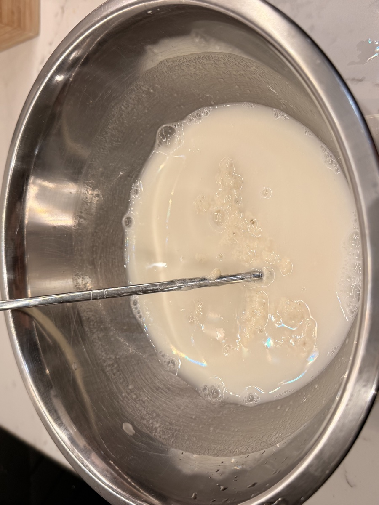
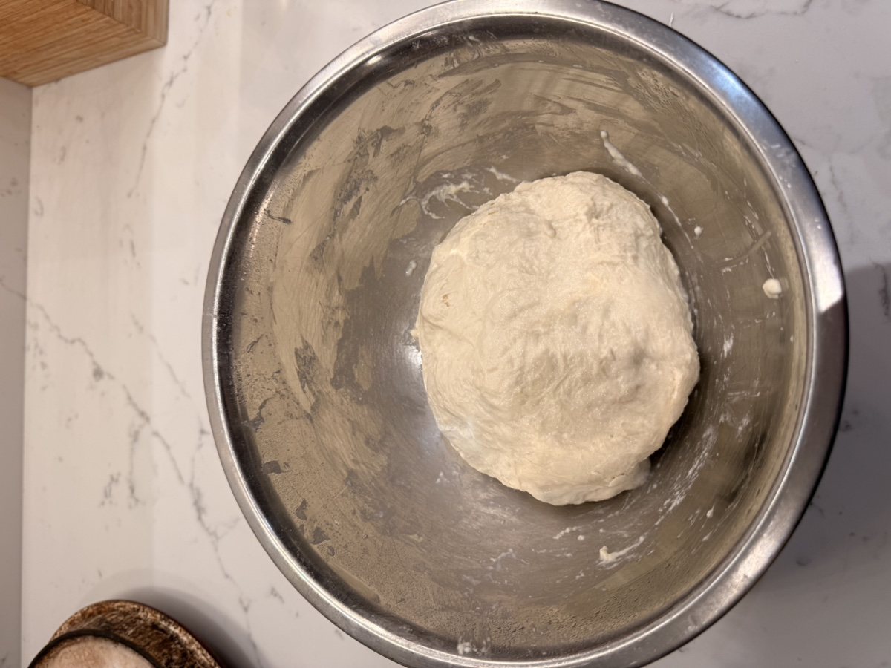
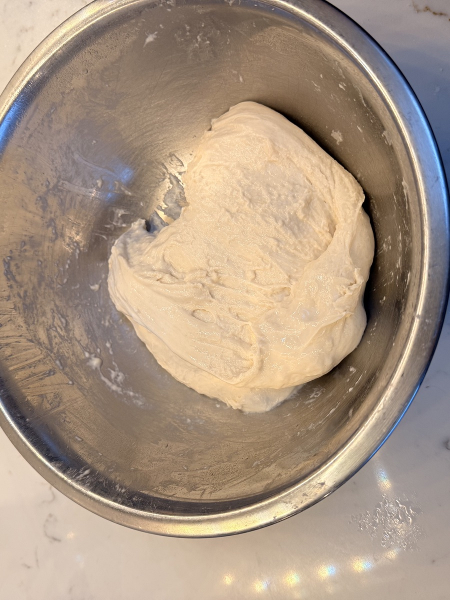
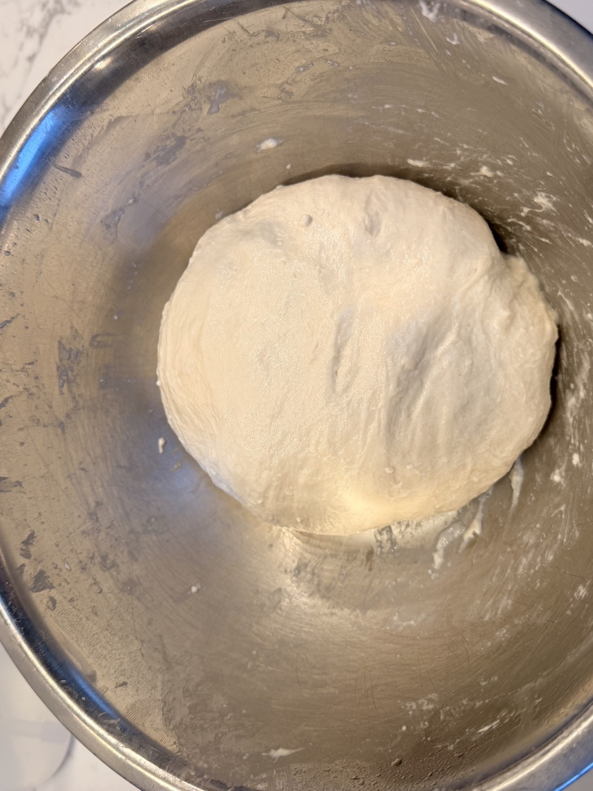
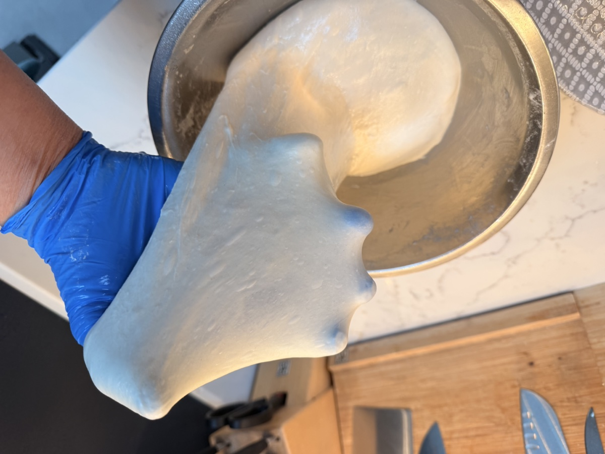
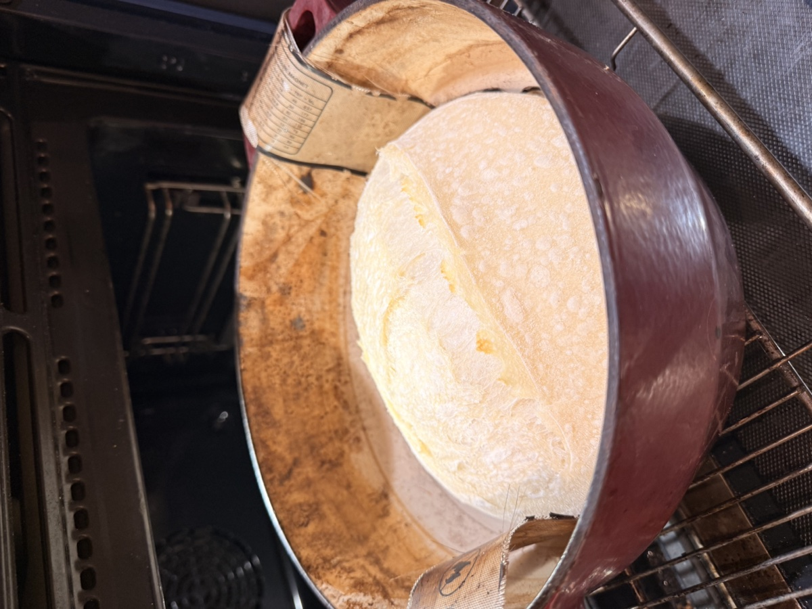
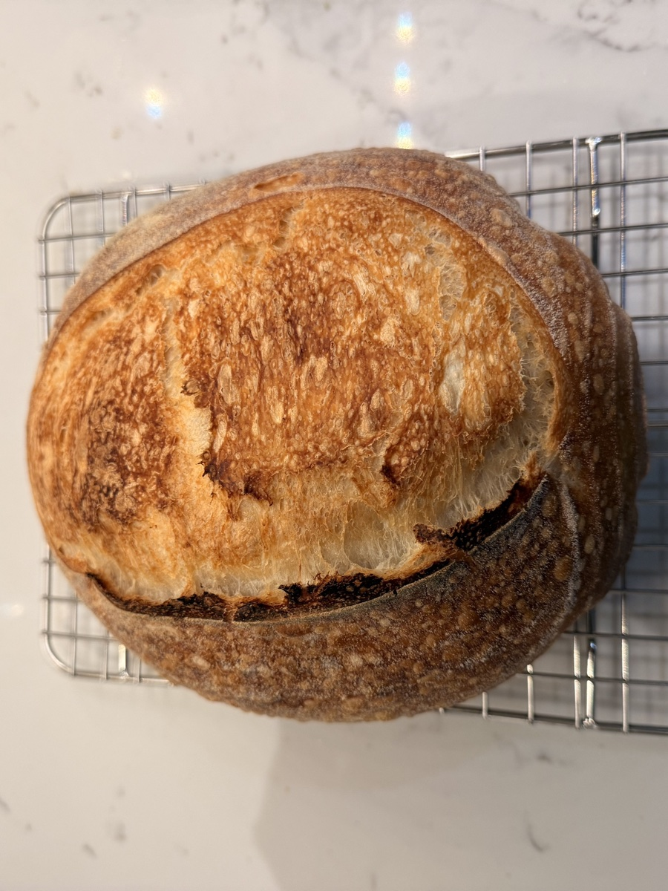

The Basic Loaf: Foolproof Sourdough Recipe
This is it. The master recipe. It's built to be flexible because life rarely goes exactly to plan. The long fermentation time does all the heavy lifting for flavor, so you don't have to work hard.

Ingredients (for 1 Loaf)
- 100-125g active sourdough starter (anywhere in this range works)
- 180g lukewarm water (approx. 35-40°C / 95-104°F)
- 280g strong white bread flour
- 5g fine sea salt
Method (Simple 2-Day Process)
We split this over two days to make it manageable. Day 1 is low-effort mixing and fermenting. Day 2 is just baking. You can adjust the timing to fit your schedule.
Quick Overview
-
Day 1 AM:
Mix shaggy dough, rest briefly, quick final mix.
-
Day 1 Afternoon/Evening:
Long bulk ferment (6+ hrs at room temp, mostly hands-off). Shape dough.
-
Day 1 Evening:
Short counter proof (2-3 hrs).
-
Day 1 Night → Day 2:
Cold proof in fridge (8-24+ hrs).
-
Day 2 Bake Time:
Preheat oven & Dutch oven. Score cold dough. Bake lid on, then lid off. Cool completely.
Day 1: Mixing & Proofing
-
Combine Ingredients (Morning): In a large bowl, combine your 100-125g active starter with 180g lukewarm water and mix well until the starter is fully dissolved and the mixture looks milky.

Then add 5g salt and the 280g strong bread flour. Use your hands or a sturdy spoon to mix everything roughly until no dry flour remains. The dough will look shaggy and rough - like a messy tangle of sticky, uneven clumps with no smooth surface. This is exactly what you want!

Cover the bowl (with cling film, a shower cap, or a plate).
- Short Rest & Mix: Let the covered bowl sit for about 10-15 minutes. Then, spend just 1 minute using wet hands to gently fold the dough over itself in the bowl, or use your spoon/spatula to bring it together. It doesn't need kneading - you're just making sure everything comes together a bit more than that rough mess from earlier. Cover again.
-
Bulk Fermentation (The Wait): Now, leave the covered
bowl at room temperature. We're looking for the dough to grow and become airy.
Temperature affects timing: In a warm kitchen (22°C/72°F), bulk fermentation might take 5-6 hours. In a cooler kitchen (18°C/64°F), it could take 8-10 hours. Time is a guide, but the dough's appearance tells you when it's actually ready.
Signs it's ready: The surface looks smooth and bubbly, the dough wobbles when you gently shake the bowl, and it has increased in size by about 50-75%.
Stretch & Folds: During the first 3-4 hours of fermentation, do at least 2 sets of stretch and folds (3-4 sets is even better if you have time). This helps build structure and makes shaping easier later. See the full technique guide. With wet hands, reach under one side of the dough, gently stretch it upwards, and fold it over the top. Rotate the bowl 90 degrees and repeat 3 more times (total 4 stretches/folds per set). Wait 45-60 minutes between sets.
See the technique in action
Watch the gluten develop: Here's what the dough looks like after each stretch and fold set:
After the first stretch and fold - early gluten development
After the second stretch and fold - notice the smoother surface
After the third stretch and fold - smooth, strong dough with good structure
Want to check your gluten development? Try the windowpane test: after your last set, take a small piece of dough and gently stretch it between your fingers. If it stretches thin enough to see light through without tearing, you've got good gluten development. Learn more about the windowpane test.
A passed windowpane test - the dough stretches thin without tearing
-
Shape: Once the dough looks ready (increased size), it's time to shape. Handle the dough gently to preserve the air bubbles you've worked so hard to create!
- Gently tip the dough out onto a lightly floured worktop
- Press the dough out slightly into a rough rectangle
- Fold the top third down toward the center
- Fold the bottom third up (like folding a letter)
- Fold the left third over, then the right third over
- Flip it over so the seams are underneath
- Cup your hands around the dough and gently rotate it on the counter to create surface tension and form a round ball (boule) or an oval (batard)
Watch the video below to see the complete shaping technique. Remember: gentle handling is key!
-
Prepare Banneton & Final Proof Prep: Generously dust your banneton (or a
medium bowl lined with a clean, non-fluffy tea towel) with rice flour. Rice flour is key as it
doesn't absorb moisture like regular flour, preventing sticking. If you don't have rice flour, regular bread flour works too - just use a bit more.
CRITICAL: Gently place the shaped dough into the banneton with the SEAM SIDE UP. This is important! When you flip it out for baking, the seam side will be on the bottom, and the smooth side will be on top for scoring. Getting this wrong means you'll be trying to score the seamy bottom, which doesn't work well.
Watch the complete shaping and banneton process
- Counter Proof: Cover the banneton (a plastic bag or shower cap works well). Leave it on your worktop at room temperature for 1-2 hours. The dough should rise a bit more in the banneton and feel lighter and airier when you gently touch the surface. You'll know it's ready when it springs back slowly if you press it gently with a floured finger - it shouldn't feel dense or tight.
- Cold Proof (Overnight): Transfer the covered banneton to the fridge. This is where the recipe really works with your schedule. You can bake it after 8 hours, or leave it for 12, 16, even 24 hours. Life happens, and this dough waits patiently while developing deeper flavor. Bake it when you're ready.
Day 2: Baking
-
Preheat Oven & Dutch Oven: When you're ready to bake, place your Dutch oven
(with its lid on) inside your main oven. Preheat the oven to 235°C (455°F). It's crucial the
Dutch oven gets incredibly hot, so let it preheat for at least 20 minutes after the
oven reaches temperature (30-40 minutes total preheat time is ideal).
Safety warning: The Dutch oven will be extremely hot! Use thick oven gloves and work carefully.
-
Prepare Dough for Baking: Just before you bake, take the banneton out of the
fridge. Place a piece of baking parchment paper over the top of the banneton.
Now for the flip: Place one hand flat on top of the parchment paper to hold it in place, and use your other hand to support the bottom of the banneton. In one smooth motion, flip the whole thing over so the dough releases onto the parchment paper. Lift off the banneton/bowl.
-
Score the Loaf: Using a baker's lame or a sharp knife, make one confident,
decisive score across the top of the loaf (about 1-2 cm or 1/2 inch deep). A simple curve or a
cross works well for beginners. This allows the bread to expand when baking. See scoring technique.
Watch the scoring technique in action
- Bake (Lid On): Carefully take the very hot Dutch oven out of the oven. Remove the lid. Using the parchment paper as a sling, carefully lower your scored dough into the hot Dutch oven. Put the lid back on immediately. Place the Dutch oven back into the main oven. Bake at 235°C (455°F) for 25 minutes.
-
Bake (Lid Off): After 25 minutes, carefully remove the Dutch oven lid (be
cautious of steam!). Your bread should look pale and puffy at this stage.

This is what your loaf should look like when you remove the lid
Reduce the oven temperature to 220°C (430°F). Continue baking with the lid off for another 20 minutes. Watch the color change: your bread will progress from pale to medium golden, and finally to a deep golden brown. You're looking for a rich, deep color - not just light golden, but a proper toasted brown crust.
-
Cool Completely: Using oven gloves, carefully lift the baked loaf out of the
Dutch oven (you can use the parchment paper) and place it on a wire rack.

Your beautiful finished loaf!
Now for the hardest part: let it cool completely! This takes at least 30 to 45 minutes - the inside is still cooking and setting even after you remove it from the oven. Slicing into hot bread will result in a gummy, doughy texture because the structure hasn't fully set. The starches need time to crystallize and the moisture needs to redistribute. Wait, and you'll get the texture you actually want.
- Enjoy! Your bread is ready to go! Check out my ideas page for some ideas on sandwich fillings and other uses for your bread. You can also freeze any leftovers (if there are any!) for later use. Just slice it first, then wrap it tightly in cling film or foil and place it in a freezer bag. When you're ready to eat, just take out a slice and toast it straight from frozen!
Not Getting the Results You Want?
Sometimes you need eyes on your specific situation. Get personalized help with your flour, kitchen temperature, and timing.
Book a 1:1 Coaching Session →